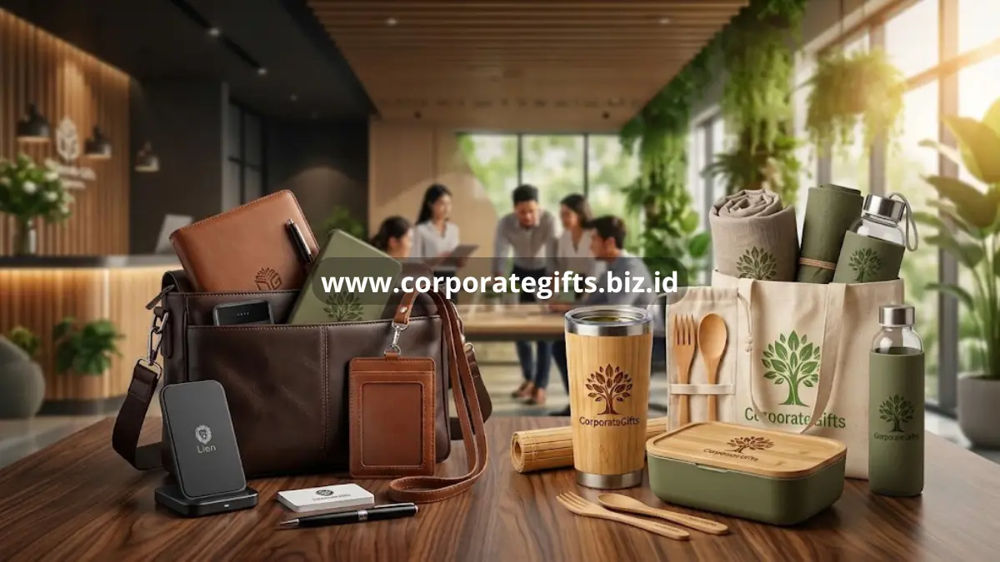

Poin Penting:
- Pergeseran tren membuat perusahaan semakin selektif dalam memilih corporate gifts for employees.
- Koleksi premium umumnya menonjolkan material eksklusif seperti kulit asli dan perangkat elektronik berkualitas tinggi.
- Koleksi eco-friendly menghadirkan produk seperti tumbler bambu dan tas kanvas sebagai pengganti kemasan sekali pakai.
- CorporateGifts menyediakan opsi kustomisasi untuk kedua kategori tren tersebut sesuai citra brand perusahaan.
Tren corporate gifts for employees saat ini mengarah pada dua kategori utama, yaitu koleksi premium bermaterial eksklusif dan koleksi eco-friendly yang mendukung nilai keberlanjutan perusahaan.
Mengapa Perusahaan Mulai Beralih ke Tren Gift yang Lebih Spesifik?
Perusahaan mulai beralih ke tren gift yang lebih spesifik karena karyawan dan mitra bisnis semakin memperhatikan kualitas material serta nilai keberlanjutan dari setiap hadiah yang diterima.
Preferensi ini mendorong perusahaan untuk lebih selektif, tidak lagi sekadar memilih barang generik, melainkan mempertimbangkan bagaimana pilihan hadiah dapat merepresentasikan nilai dan citra brand secara lebih konsisten.
Apa Saja Koleksi Premium Corporate Gifts for Employees dari CorporateGifts?
Koleksi premium corporate gifts for employees umumnya menonjolkan material eksklusif seperti kulit asli serta perangkat teknologi dengan kualitas dan presisi finishing yang lebih tinggi.
Eksklusivitas Material Kulit Asli untuk Dompet, Agenda, dan ID Card Holder
Material kulit asli memberikan kesan mewah dan tahan lama, cocok untuk item seperti dompet, agenda, hingga ID card holder yang sering digunakan dalam kegiatan formal perusahaan.

Gadget dan Elektronik Berkualitas Tinggi
Gadget premium seperti powerbank berkapasitas besar atau earphone custom logo menjadi pilihan yang relevan untuk kalangan profesional yang mobile dan mengandalkan perangkat elektronik dalam pekerjaan sehari-hari.
Apa Saja Pilihan Eco-Friendly Corporate Gifts for Employees?
Pilihan eco-friendly corporate gifts for employees mencakup tumbler bambu, peralatan minum reusable, hingga tas kanvas custom logo sebagai pengganti kemasan sekali pakai.
Tumbler Bambu dan Peralatan Minum Reusable
Tumbler berbahan bambu atau material reusable lainnya membantu mengurangi penggunaan kemasan sekali pakai, sekaligus tetap tampil elegan dengan sentuhan logo perusahaan.
Tas Kanvas dan Tote Bag Daur Ulang Pengganti Plastik
Tas kanvas dan tote bag berbahan daur ulang semakin diminati sebagai pengganti kantong plastik, sekaligus menjadi media branding yang praktis digunakan karyawan dalam aktivitas harian.
Sesuaikan Tren dengan Citra Brand Perusahaan Bersama CorporateGifts
CorporateGifts menyediakan opsi kustomisasi premium maupun eco-friendly agar corporate gifts for employees tetap selaras dengan citra brand perusahaan Anda.
Baik memilih koleksi premium maupun eco-friendly, CorporateGifts membantu memastikan hasil kustomisasi logo tetap presisi dan berkualitas.
Konsultasikan Kebutuhan Souvenir Premium Anda Hari Ini
Hubungi CorporateGifts sekarang untuk mendiskusikan pilihan koleksi premium atau eco-friendly yang paling sesuai dengan citra brand dan nilai keberlanjutan perusahaan Anda.
- Tren corporate gifts for employees kini mengarah pada dua kategori utama, yaitu premium dan eco-friendly.
- Koleksi premium menonjolkan material eksklusif seperti kulit asli dan gadget berkualitas tinggi.
- Koleksi eco-friendly menghadirkan produk ramah lingkungan seperti tumbler bambu dan tote bag daur ulang.
- CorporateGifts siap membantu kustomisasi kedua kategori tren tersebut sesuai citra brand perusahaan Anda.
FAQ
1. Apa itu tren corporate gifts for employees saat ini?
Tren saat ini mengarah pada dua kategori utama: hadiah premium bermaterial eksklusif dan hadiah eco-friendly yang mendukung keberlanjutan lingkungan.
2. Mengapa banyak perusahaan beralih ke hadiah eco-friendly?
Perusahaan beralih ke hadiah eco-friendly untuk menyesuaikan dengan meningkatnya kesadaran karyawan terhadap lingkungan dan nilai keberlanjutan perusahaan itu sendiri.
3. Produk apa saja yang masuk kategori premium?
Produk premium umumnya meliputi barang berbahan kulit asli (seperti dompet dan agenda) serta perangkat elektronik berkualitas tinggi.
4. Produk apa saja yang masuk kategori eco-friendly?
Produk eco-friendly mencakup tumbler bambu, peralatan minum reusable, dan tas kanvas berbahan daur ulang sebagai pengganti kantong plastik.
5. Apakah CorporateGifts melayani pesanan kustomisasi untuk kedua kategori tersebut?
Ya, CorporateGifts menyediakan opsi kustomisasi logo yang presisi baik untuk koleksi premium maupun koleksi eco-friendly sesuai dengan citra brand perusahaan Anda.
Butuh rekomendasi cepat untuk corporate gift?
Chat tim Pusat Souvenir & Merchandise Kantor untuk kurasi pilihan sesuai budget & kebutuhan brand Anda.